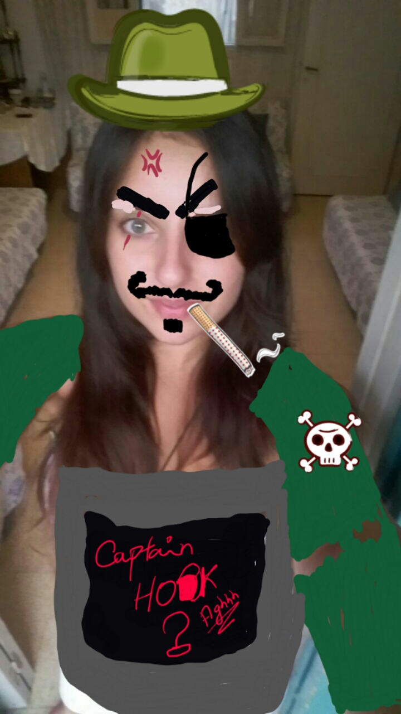

KARKOURAAAA this is OFFICIALLY!! my first web page

my first paragraph..this is new
now i will write a list:
- milk
- chocolat
-
peanuts
- chips:
- pepsy
section 1
hjkldsa hdjsakld asd asld ahdlkashdlashdaslkdhasldh ahsdjklashdjasdsa hjdsaldhlskad hjkldashjkdlsajkl dsahjkldsahjkdlsa dhjskaldhjkskald hjskald hjskald hjskal dhjksakl dhjsakld hsjakl dhjkas
The project is an authentication system that validates user for accessing the system only when they have input correct password. The project involves three levels of user authentication. There are varieties of password systems available, many of which have failed due to bot attacks while few have sustained it but to a limit. In short, almost all the passwords available today can be broken to a limit. Hence this project is aimed to achieve the highest security in authenticating users.
It contains three logins having three different kinds of password system. The password difficulty increases with each level. Users have to input correct password for successful login. Users would be given privilege to set passwords according to their wish. The project comprises of text password i.e. passphrase, image based password and graphical password for the three levels respectively. This way there would be negligible chances of bot or anyone to crack passwords even if they have cracked the first level or second level, it would be impossible to crack the third one. Hence while creating the technology the emphasis was put on the use of
Biographie
The project is an authentication system that validates user for accessing the system only when they have input correct password. The project involves three levels of user authentication. There are varieties of password systems available, many of which have failed due to bot attacks while few have sustained it but to a limit. In short, almost all the passwords available today can be broken to a limit. Hence this project is aimed to achieve the highest security in authenticating users.
It contains three logins having three different kinds of password system. The password difficulty increases with each level. Users have to input correct password for successful login. Users would be given privilege to set passwords according to their wish. The project comprises of text password i.e. passphrase, image based password and graphical password for the three levels respectively. This way there would be negligible chances of bot or anyone to crack passwords even if they have cracked the first level or second level, it would be impossible to crack the third one. Hence while creating the technology the emphasis was put on the use of